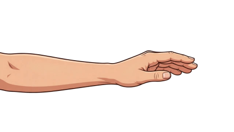

🎬 오늘의 루틴 운동 목록 ▸
1분, 손목 굽힘·폄부터 시작해요
📰 최근 기록 전체 보기 ▸
아직 기록이 없어요. 오늘의 루틴부터 시작해 봐요.
🌌 밤하늘 도감 0/16 수집 ▸
🎬 오늘의 루틴
🎬 오늘의 루틴 누르면 시범이 재생돼요
운동 🎯 오늘의 포커스 1/3
🔒 분석은 이 기기 안에서만 이루어지며, 영상은 저장되거나 외부로 전송되지 않습니다.
준비 중…
통증이 느껴지면 무리하지 말고 편하게 멈춰요
지금 손목 어때요?
🌟
잘하셨어요! 오늘도 손목을 돌봤어요.
오늘은 무리하지 않아도 괜찮아요. 뻐근함이 계속되면 충분히 쉬어주세요.
🩺 이것만 지켜요
통증이 있으면 즉시 멈추세요. 회수를 다 못 채워도 오늘 한 것으로 인정돼요.
💡 인식이 잘 안 돼요
① 손이 화면 안에 다 들어오게 놓아주세요
② 밝기가 너무 어두우면 인식이 어려워요
박자는 안 맞춰도 괜찮아요 — 천천히 하면 됩니다.
📏 손목 체크
📊 손목 체크

여기에 손목이 비쳐요
팔꿈치를 책상에 대고 옆모습이 보이게 두세요.
오른쪽 체크 시작하기를 누르면 카메라가 켜집니다.
손목을 옆에서 보이게 하고, 체크를 시작하세요.
⚠ 팔은 그대로, 손목만 움직여요
✋ 어느 손을 재나요
🔒 분석은 이 기기 안에서만 이루어지며, 영상은 저장되거나 외부로 전송되지 않습니다.
🎯 오늘의 손목 가동범위
🗓 다음 체크는 다음 주쯤이 좋아요
📐 이렇게 재요
① 팔꿈치를 책상에 대고 옆모습이 보이게 두세요
② 손목만 천천히 굽혔다 폈다 해요
본 수치는 웹캠 기반 자가 참고값입니다. 질병의 진단·판정 목적이 아닙니다.
🎮 미니게임
🌠 별 따기
🌠
여기에 별이 떠요
떠도는 별을 엄지와 검지로 집어 잠깐 들고 있으면
별이 고양이에게 모입니다. 오른쪽 시작하기를 누르면 카메라가 켜집니다.
🔒 분석은 이 기기 안에서만 이루어지며, 영상은 저장되거나 외부로 전송되지 않습니다.
🤏 오늘의 핀치 집기
엄지와 검지로 별을 집어 보세요.
0 / 0
아프면 바로 멈추세요. 손이 잘 안 잡혀도 괜찮아요 — 언제든 그만둘 수 있습니다.
📈 내 손목 기록
📈 손목 굽힘·폄 추이
⭐
아직 체크 기록이 없어요.
손목 상태를 재고 변화를 지켜봐요.
↔️ 손목 좌우 편위 추이
🔥 데일리 루틴
🧊 이번 주 프리즈 사용됨 — 하루 쉬었지만 스트릭이 이어졌어요
⭐
아직 루틴 기록이 없어요.
오늘의 풀코스를 시작해 봐요.
📋 운동 완료 기록
🎬
아직 완료한 운동이 없어요.
가이드를 따라 첫 운동을 해봐요.
본 수치는 웹캠 기반 자가 참고값입니다. 질병의 진단·판정 목적이 아닙니다.